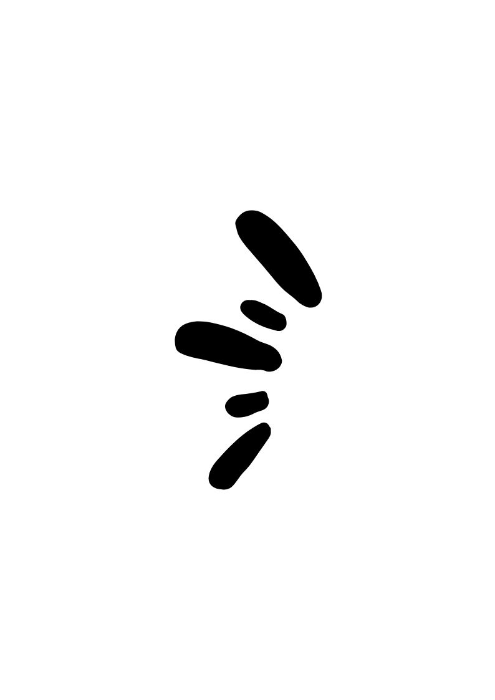
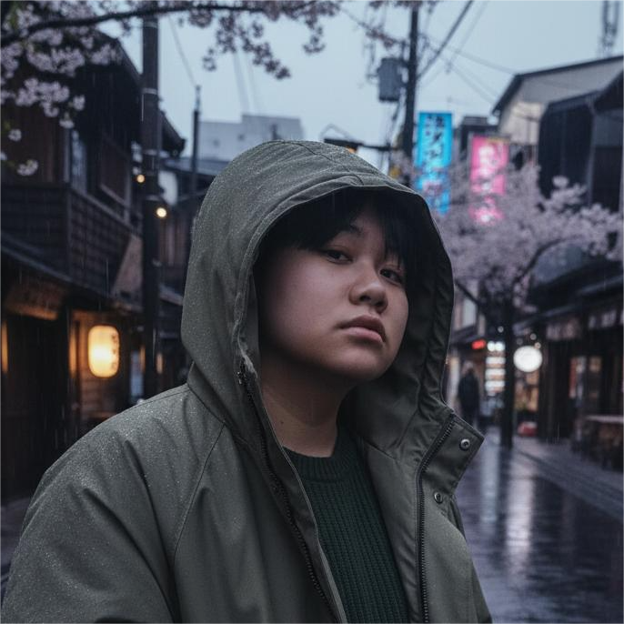
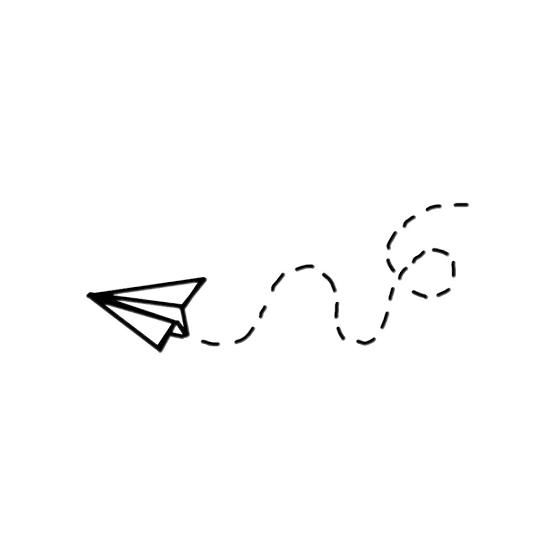
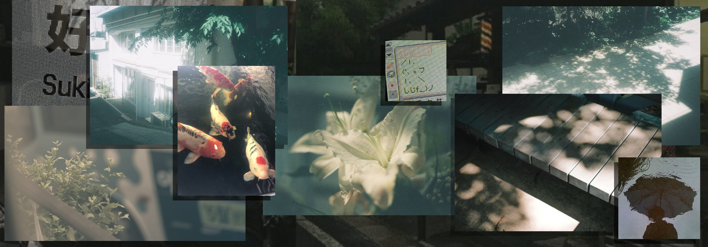

|  |  |
Kunkanya Lektawinwong ชื่อเล่น : " KUN กุล "( นักศึกษา ) สาขา : Digital information and technology (DIT) กลุ่มเรียน : 1.2-1 สถาบันการจัดการปัญญาภิวัฒน์ PIM |
 |
เนื่องจากฉันเองที่มีความสนใจอยากลองทำในด้านการพัฒนา ตกแต่งเว็บไซต์ และเพิ่มทักษะในการพัฒนาเว็บไซต์ให้ครบวงจรมากขึ้น เพื่อที่จะสามารถสร้างและดูแลเว็บไซต์ได้อย่างมีประสิทธิภาพ ดังนั้นการเรียนรู้ Full stack web development จะช่วยให้ดิฉันเข้าใจการทำงานของเว็บไซต์ในทุกๆด้าน ไม่ว่าจะเป็น Front-end หรือ Back-end ซึ่งจะเป็นประโยชน์ต่อการทำงานในอนาคต ที่ไม่ว่าจะเป็นงานการออกแบบเว็บไซต์แบบไหนก็จะสามารถทำได้โดยง่าย ทั้งยังช่วยเพิ่มโอกาสในการได้รับงานในสายงานที่เกี่ยวข้องกับการพัฒนาเว็บไซต์อีกด้วย |
ฉันหวังว่าจะได้รับความรู้และทักษะที่จำเป็นในการพัฒนาเว็บไซต์อย่างครบถ้วน ทั้งในด้านการออกแบบหน้าเว็บและการเขียนโค้ด รวมถึงการทำงานร่วมกับฐานข้อมูลและเซิร์ฟเวอร์ด้วย นอกจากนี้ยังคาดหวังว่าจะได้เรียนรู้เกี่ยวกับเครื่องมือและเทคโนโลยีที่ใช้ในวงการ Full stack web development เช่น HTML, CSS, JavaScript, Node.js, React, etc. เพื่อที่จะนำความรู้ไปประยุกต์ใช้ในการทำงานสร้างเว็บไซต์และตอบสนองต่อผู้ใช้ได้อย่างถูกต้องตามความต้องการ |
จุดอ่อนคือการขาดความเข้าใจในบางภาษาของโปรแกรมและการแก้ไขปัญหาที่ซับซ้อนในการเขียนโค้ด
นอกจากนี้ยังมีปัญหาในการวางแผนโครงสร้างของโปรแกรม ซึ่งทำให้บางครั้งไม่สามารถทำงานได้อย่างมีประสิทธิภาพ
แนวทางการพัฒนาคือการฝึกฝนและเรียนรู้เพิ่มเติมเกี่ยวกับภาษาโปรแกรมที่ยังไม่คุ้นเคย
การทำโปรเจกต์เล็กๆ เพื่อเพิ่มประสบการณ์ และการใช้เครื่องมือต่างๆ เช่น การใช้ GitHub เพื่อช่วยในการจัดการโค้ดและการทำงานร่วมกับผู้อื่น
และยังต้องพัฒนาทักษะในการวางแผนและจัดการเวลาเพื่อเพิ่มประสิทธิภาพในการทำงานให้ดีขึ้น
|  |
About me
สวัสดีค่ะ ฉันชื่อ กุล กุลกันยา เล็กถวิลวงศ์ เป็นนักศึกษาชั้นปีที่ 2 ที่สถาบันการจัดการปัญญาภิวัฒน์
คณะวิศวกรรมศาสตร์และเทคโนโลยี สาขาเทคโนโลยดิจิทัลและสารสนเทศ (DIT) ฉันมีความสนใจในด้านการพัฒนาเว็บไซต์และการเขียนโปรแกรม
โดยเฉพาะอย่างยิ่งในด้าน Full stack web development ซึ่งเป็นสิ่งที่ฉันต้องการเรียนรู้และพัฒนาเพิ่มเติมในอนาคต
และฉันยังมีความสนใจในด้านการออกแบบกราฟิกและการสร้างสรรค์งานศิลปะดิจิทัล
นอกจากนี้ตัวฉันเองเป็นคนที่ชอบทำอะไรใหม่ๆ และท้าทายตัวเองอยู่เสมอ
ฉันเชื่อว่าการเรียนรู้และพัฒนาทักษะใหม่ๆ เป็นสิ่งสำคัญที่จะช่วยให้ฉันเติบโตและประสบความสำเร็จในอนาคต
ฉันหวังว่าจะได้เรียนรู้และพัฒนาทักษะในด้านต่างๆ อย่างต่อเนื่อง และนำความรู้ที่ได้รับไปใช้ในการทำงานและชีวิตประจำวันได้อย่างมีประสิทธิภาพ
ชื่นชอบไปที่ไหน.. ก็ที่นี่ไง
คลิก link เพื่อหาแรงบันดาลใจได้ที่.. ตรงนี้
Experience
| Year | Work Place |
|---|---|
| 2024 | Restaurant Staff - Rad Saep Nua |
| 2025 | Intern - 7-Eleven |
Skills
| Java | ⭐⭐⭐⭐⭐ | Chiness | ⭐⭐ |
| SQL | ⭐⭐⭐⭐ | English | ⭐ |
| HTML | ⭐⭐ |